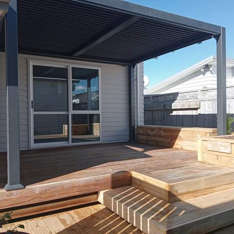
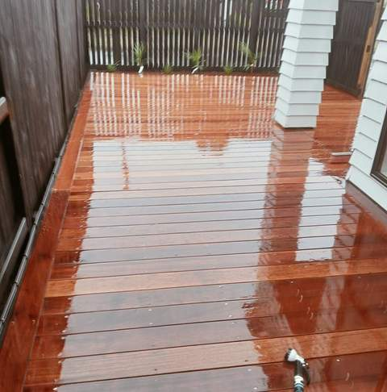
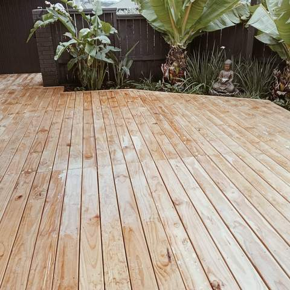
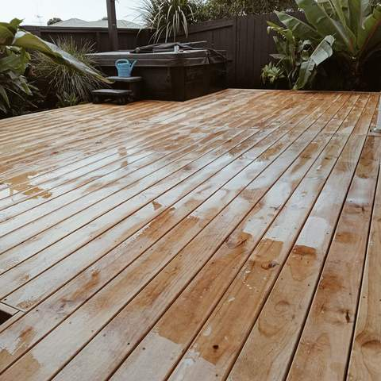
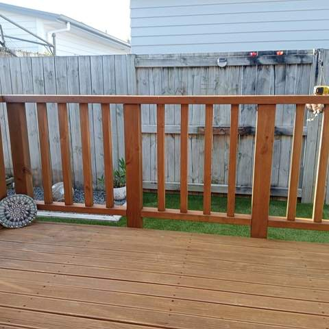
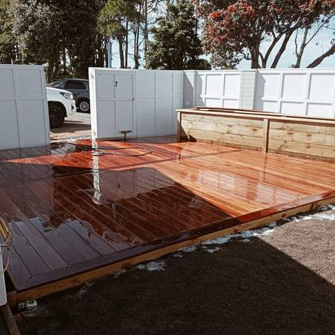
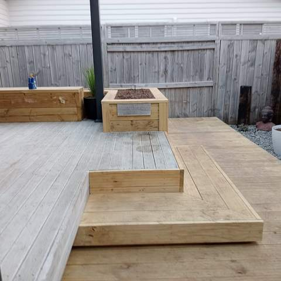
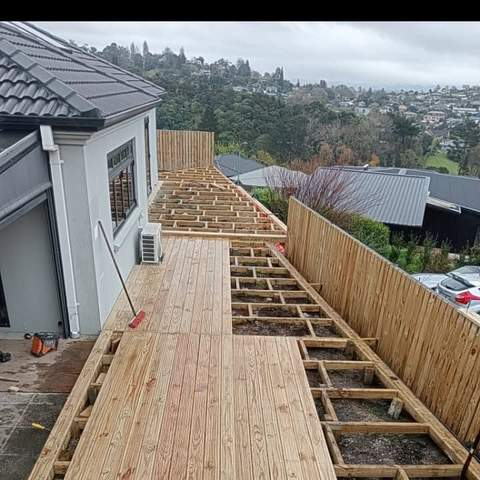

Deck Builders in Tauranga
Pine, hardwood and composite decks on a solid subframe, finished with steps, planters and screens to match.
Decks built around how you use the space
From spring through to autumn the deck is often the busiest room of a Tauranga home. Straight Line Landscaping builds ground-level decks off sliding doors, boardwalks down side passages, decks around spa pools and raised decks on sloping sections, often with built-in steps, planter boxes and privacy screens. Because Straight Line also does the landscaping, the deck ties in with the lawn, garden beds and paths around it.
Pine, hardwood or composite?
Treated pine is the most affordable decking and takes oil or stain well, but needs re-coating every year or two to look its best. Hardwoods such as kwila and vitex are denser and harder wearing, and cost more. Composite boards cost more again but don't need oiling and won't splinter. Your quote can lay out the options side by side.
The part you don't see
A deck is only as good as its subframe. Piles, bearers and joists are set out level and square, using timber treated for ground contact where it needs to be, and boards are fixed with stainless or galvanised fixings that suit the coastal air around the Mount and Papamoa.
Consent and balustrades
Under the Building Code, a deck where someone could fall more than 1 metre needs a barrier, and decks more than 1.5 metres above the ground generally need building consent. Most ground-level decks need neither. Matt will confirm what applies to yours when he quotes.

Pine deck with built-in steps under a pergola 
Freshly oiled hardwood deck beside a house 
New pine deck surrounded by tropical planting 
Large pine deck in a fenced garden with a spa pool 
Stained deck with timber balustrade next to artificial turf 
Newly oiled hardwood deck with timber bench seating 
Deck with built-in timber planter boxes and step 
Elevated deck under construction with subframe and view over the city
How we work
A simple, four-step process from first call to final tidy-up.
Enquiry
Call or text Matt on 020 4006 6910, or send the quote form. A few photos of the area help.
Site visit & itemised quote
Matt comes out, measures up and talks through options, then sends a written quote broken down by item.
Build
Work is done in the right order (earthworks, walls and drainage, irrigation, then turf, decking and planting).
Tidy handover
The site is cleaned up and you get a walk-through, plus care tips such as a watering plan for new lawn.
Decks: common questions
Do I need building consent for a deck?
Generally not for a deck less than 1.5 metres above the ground. Higher decks usually need consent, and any deck with a fall of more than 1 metre needs a balustrade. Matt will confirm what applies to your site.
Which decking timber is best for Tauranga?
Treated pine is the budget-friendly choice, hardwood is harder wearing and richer in colour, and composite is the low-maintenance option. The right choice depends on budget, sun exposure and how much upkeep you want.
How often does a deck need oiling?
Pine decks usually need re-oiling or staining every 12 to 24 months. Hardwood can be oiled yearly to keep its colour or left to weather to silver. Composite just needs a wash.
Can you add steps, planters or screens?
Yes. Built-in steps, timber planter boxes, bench seats and slat screens are common on Straight Line decks, as the photos show.
Can you build a deck around a spa pool?
Yes. Decks can be framed around a spa pool so it sits at a comfortable height, with access left for servicing.
Often combined with
Planning a new deck?
Get a free, itemised quote from Matt. Serving Tauranga and the Western Bay of Plenty.